下推自动机
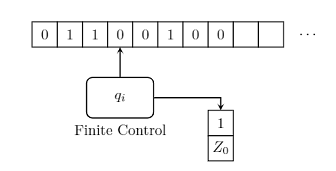
一个下推自动机和一个$\epsilon$-NFA类似，拥有一个无限长的输入带，一个有穷状态控制器，一个读头。同时具有$\epsilon$-NFA的特性：
- 有限状态
- 非确定
- $\epsilon$转移
与之不同的是，下推自动机增加一个符号栈，符号栈有一个读写头，读写的时候后进先出，只用栈顶，栈长度无限。 - $pop$：仅仅弹出栈顶一个符号
- $push$：可压入一个符号串
读头从输入带上一次读入一个字符，并向右移动一个单位长度，控制符号栈读头弹出一个符号。有穷控制器根据读入的字符，弹出的栈顶符号以及当前的状态，修改当前状态，并向符号栈压入一个新串。
下推自动机能识别的语言比有穷自动机更多
形式定义
下推自动机（PDA，Pushdown Automata），$P$为七元组
- $Q$：有穷状态集
- $\Sigma$：有穷输入符号集
- $\Gamma$：有穷栈符号集
- $\delta:Q \times (\Sigma \cup \lbrace \epsilon \rbrace) \times \Gamma \to 2^{Q \times \Gamma^{\ast}}$：状态转移函数
- $q_0 \in Q$：初始状态
- $Z_0 \in \Gamma - \Sigma$：栈底符号
- $F \subseteq Q$：接受状态集或终态集
如果$q,p_i \in Q(1 \leq i \leq m)$，$a \in \Sigma$，$Z \in \Gamma$，$\beta_i \in \Gamma^{\ast}$，可以有动作
或
对于状态为$q$的情况，接受一个字符$a$或者$\epsilon$，当栈顶为$Z$时，弹出$Z$，接下来可以压入串$\beta_i$，并跳到状态$p_i$；也可以压入串$\beta_j$，并跳到状态$p_j$，对应的状态转移图如下：
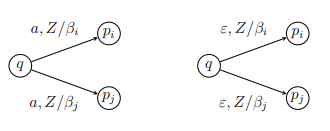
例1：设计识别$L_{01}=\lbrace 0^n1^n \vert n \geq 1 \rbrace$的PDA。
正则语言不能表示的语言，PDA可以表达。当读入0的时候，把0都压入栈中；当读入1时，弹出一个0。当读完最后一个符号，如果正好栈置0，可以通过空转移跳转到接受状态。为此引入一个栈底符号$Z_0$，它事先存在于栈中。
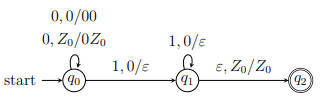
一开始，状态为$q_0$时对应接受0的状态，当栈顶是$Z_0$和0时压入一个0。当读到1且栈顶为0，就跳转到$q_1$准备接受1，此后每次读1都出栈一个0。如果串合法，读完后栈顶是$Z_0$，此时通过空转移跳转到接受状态。
例2：设计识别$L_{wwr} = \lbrace ww^R \vert w \in (0+1)^{\ast} \rbrace$
即识别01构成的回文串。在读$w$的时候压栈，读$w^R$时出栈，则出栈的符号和读入的符号相同。具体流程是：在读$w$时候对应$q_0$，无论栈顶是什么，都仅把读入的压栈，两种读入，三种栈顶情况，一共考虑六种可能。读完$w$后，通过$\epsilon$-转移转移到$q_1$开始读$w^R$，考虑三种栈顶可能。在$q_1$状态时吗，读入和栈顶相等时，只弹出。当读完$ww^R$，栈顶变为$Z_0$，通过空转移跳转到接收状态。
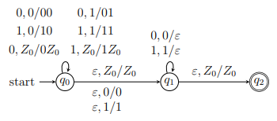
瞬时描述和转移符号
定义：为描述PDA瞬间的格局，定义$Q \times \Sigma^{\ast} \times \Gamma^{\ast}$中三元组$(q,w,\gamma)$为瞬时描述（ID，Instananeous Description），表示此时PDA处于状态$q$，剩余输入串$w$，栈中当前全部符号为$\gamma$
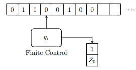
定义：在PDA $P$中如果$(p,\beta) \in \delta(q,a,Z)$，由$(q,aw,Z\alpha)$到$(p,w,\beta\alpha)$，称为$ID$的转移$\vdash_P$，记为
其中$w \in \Sigma^{\ast}, \ \alpha \in \Gamma^{\ast}$
若有$ID \ I,J,K$，递归定义$\vdash_P^{\ast}$为：
- $I \vdash_P^{\ast} I$
- 若$I \vdash_P^{\ast} J,\ J \vdash_P^{\ast} K$，则$I \vdash_P^{\ast} K$
若$P$已知，可省略，记为$\vdash$和$\vdash^{\ast}$
续例：语言$L_{01} = \lbrace 0^n1^n \vert n \geq 1 \rbrace$的PDA，识别0011时的$ID$序列。
定理23：对$\forall w \in \Sigma^{\ast}, \forall \gamma \in \Gamma^{\ast}$，如果
那么
即：“输入串后加一个$w$，栈后面加一个$\gamma$，$ID$依然可以转移”，原因是PDA没有用到输入串$x$之后的部分$w$和栈$\beta$后的部分$\gamma$
定理24：
对$\forall w \in \Sigma^{\ast}$，如果
那么
因为转移过程输入串没有用到$w$，所以可以删掉。
注意对栈不实用删除$w$
下推自动机接受的语言
定义：PDA $P=(Q,\Sigma,\Gamma,\delta,q_0,Z_0,F)$
- $P$以终态方式接受的语言，记为$\boldsymbol{L}(P)$，定义为
- 以空栈方式接受的语言，记为$\boldsymbol{N}(P)$，定义为
续例2：识别$L_{wwr} = \lbrace ww^R \vert w \in (0+1)^{\ast} \rbrace$ 的PDA $P$，从终态方式接受，改为空栈方式接受。
用$\delta(q_1,\epsilon,Z_0)=\lbrace(q_1,\epsilon) \rbrace$代替$\delta(q_1,\epsilon,Z_0)=\lbrace (q_2,Z_0)\rbrace$即可。
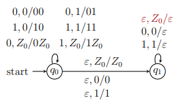
从终态方式到空栈方式
定理25：如果PDA $P_F$以终态方式接受语言$L$，那么一定存在PDA $P_N$以空栈方式接受$L
证明：设$P_F=(Q,\Sigma, \Gamma,\delta_F,q_0,Z_0,F)$，构造PDA $P_N$
模拟$P_F$
增加一个状态$p0$，用$\epsilon$转移把$P_F$的栈底符压入栈中，然后让$P_F$去接受他该接受的字符串，当完成字符串读取，他的状态会落入到某一个接受状态中（例如$q{fi}$或$q{f_j}$），再利用空转移，再利用$\epsilon$转移将栈中符号弹出，跳转到$p$，再$p$中再利用空转移，将栈中符号全部弹出，栈空。即：如果一个串可以被$P_F$接受，那么也一定可以再$p$状态被$P_F$以空栈方式接受。
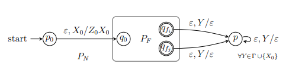
由于大部分都是模拟$P_F$，所以其中的$\delta_N$大部分是$P_F$的状态转移函数。$\delta_N$的定义如下：
- $P_N$首先将$P_F$的栈底符号压栈，开始模拟$P_F$：
- $P_N$模拟$P_F$的动作：$\forall q \in Q, \ \forall a \in \Sigma \cup \lbrace \epsilon \rbrace,\ \forall Y \in \Gamma$
- 从$q_f \in F$开始弹出栈中符号，即$\forall q_f \in F,\forall Y \in \Gamma \cup \lbrace X_0 \rbrace$
- 在状态$p$时，弹出全部栈中符号，即$\forall Y \in \Gamma \cup \lbrace X_0 \rbrace$
接下来证明构造的正确性。对于$\forall w \in \Sigma^{\ast}$有：
即$\boldsymbol{N}(P_F) \subseteq \boldsymbol{L}(P_N)$
对$\forall w \in \Sigma^{\ast}$有
即$\boldsymbol{N}(P_N) \subseteq \boldsymbol{L}(P_F)$，所以$\boldsymbol{N}(P_N) = \boldsymbol{L}(P_F)$
从空栈方式到终态方式
定理26：如果PDA $P_N$以空栈方式接受语言$L$，那么一定存在PDA $P_F$以以终态方式接受$L$
证明：设$P_N= (Q,\Sigma,\Gamma,\delta_N,q_0,Z_0,\emptyset)$，构造PDA $P_F$
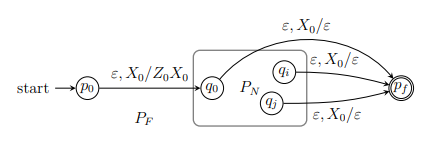
其中$\delta_F$定义如下：
- $P_F$开始时，将$P_N$栈底符号压入栈，并开始模拟$P_N$
- $P_F$模拟$P_N$，$\forall q \in Q,\ \forall a \in \Sigma \cup \lbrace \epsilon \rbrace, \ \forall Y \in \Gamma$:
- 在$\forall q \in Q$时，看到$P_F$的栈底$X_0$，则转移到新终态$p_f$：
对$\forall w \in \Sigma^{\ast}$有
即$\boldsymbol{N}(P_N) \subseteq \boldsymbol{L}(P_F)$
对$\forall w \in \Sigma^{\ast}$有
即$\boldsymbol{N}(P_F) \subseteq \boldsymbol{L}(P_N)$，所以$\boldsymbol{L}(P_F) = \boldsymbol{N}(P_N)$
例3：接受$L=\lbrace 0,1 \rbrace^{\ast} \vert w \text{中字符0和1的数量相同} \rbrace$的PDA
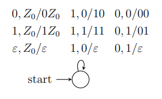
例4：接受$L=\lbrace 0^n1^m \vert 0 \leq n \leq m \leq 2n \rbrace$的PDA
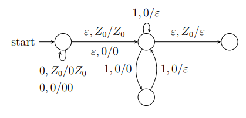
下推自动机与文法的等价性
由CFG到PDA
例5：设计语言$L=\lbrace 0^n1^m \vert 1 \leq m \leq n \rbrace$的PDA
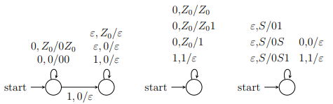
续例5：设计语言$L=\lbrace 0^n1^m \vert 1 \leq m \leq n \rbrace$的CFG
字符串00011的最左派生：
续例5：语言$L=\lbrace 0^n1^m \vert 1 \leq m \leq n \rbrace$
用PDA栈顶符号的替换，模拟文法的最左派生
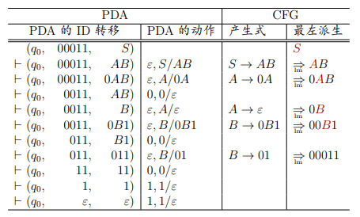
续例5：语言$L=\lbrace 0^n1^m \vert 1 \leq m \leq n \rbrace$
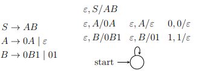
定理27：任何CFL $L$，一定存在PDA $P$，使$L=\boldsymbol{N}(P)$
构造与文法等价的PDA
如果CFG $G= (V,T,P^{\prime},S)$，构造PDA
其中$\delta$为：
- $\forall A \in V$：
- $\forall a \in T$：那么$\boldsymbol{L}(G) = \boldsymbol{N}(P)$
例6：为文法$S \to aAA,\ A \to aA \vert bS \vert a$，构造PDA
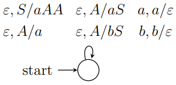
证明：往证
【充分性】往证
设$S \underset{lm}{\stackrel{\ast}{\Rightarrow}} w$中第$i$个左句型为$x_iA_i\alpha_i$，其中$x_i \in \Sigma^{\ast},A_i \in V,\alpha_i \in (V \cup T)^{\ast}$。并将$S$看作第0个左句型$x_0A_0\alpha_0=S$，那么
将$w$看作第$n$个左句型$x_nA_n\alpha_n=w$，那么
再对派生步骤$i$归证，往证
归纳基础：当左派生要0步时，显然成立
归纳递推：假设$i$步时上式成立，当第$i+1$步时，一定是$A_i \to \beta$应用到$x_iA_i\alpha_i$
变元$A{i+1}$一定再$\beta\alpha_i$中，设$A{i+1}$之前的终结符为$x^{\prime}$，则有
又因为$w=xiy_i=x_ix^{\prime}y{i+1}=x{i+1}y{i+1}$，所以有
那么，再PDA中从ID $(q,y_i,A_i\alpha_i)$模拟最左派生，用产生式$A_i \to \beta$替换栈顶$A_i$后，有
因此$S \underset{lm}{\stackrel{\ast}{\Rightarrow}} w \Rightarrow (q,w,S) \vdash^{\ast} (q,y_n,A_n\alpha_n)=(q,\epsilon,\epsilon)$，即充分性得证。
【必要性】往证更一般的，对任何变元$A$，都有：
可以看作“从输入带中消耗掉$x$”与“从栈中弹出$A$”两种作用相互抵消。对ID转移$(q,x,A) \vdash^i (q,\epsilon,\epsilon)$的次数$i$归纳证明。
归纳基础：当$i=1$次时，只能是$x=\epsilon$且$A \to \epsilon$为产生式，所以$A \underset{}{\stackrel{\ast}{\Rightarrow}} \epsilon$且$A
归纳递推：假设$i \leq n(n \geq 0)$时上式成立。当$i = n+1$时，因为$A$是变元，其第1步转移一定是
且$A \to Y_1 Y_2 \dots Y_m$是产生式，其中$Y_i$是变元或终结符，而其余的$n$步转移
中每个$Y_i$从栈中被完全弹出时，将消耗掉的那部分$x$记为$x_i$，那么显然有
而每个$Y_i$从栈中被完全弹出时，都不超过$n$步，所以由归纳假设
再由$A$的产生式$A \to Y_1 Y_2 \dots Y_m$，有
因此当$A=S,x=w$时，
成立，即必要性得证。所以，任何CFL都可由PDA识别。
构造与GNF格式文法等价的PDA
如果GNF格式的CFG $G=(V,T,P^{\prime},S)$，那么构造PDA
为每个产生式，定义$\delta$为：
续例6：文法$S \to aAA, A \to aS \vert bS \vert a$为GNF格式，构造等价的PDA
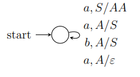
从PDA到CFG
定理：如果PDA $P$，由$L=\boldsymbol{N}(P)$，那么$L$是上下文无关语言。
构造与PDA等价的CFG
如果PDA $P=(Q,\Sigma,\Gamma,\delta,q_0,Z_0,F)$，那么构造CFG $G=(V,T,P^{\prime},S)$，其中$V$和$P^{\prime}$为：
- $V=\lbrace [qX_p] \vert p,q \in Q,X \in \Gamma \rbrace \cup \lbrace S \rbrace$
- 对$\forall p \in Q$，构造产生式$S \to [q_0Z_0p]$
- 对$\forall (p,Y_1 Y_2 \dots Y_n) \in \delta(q,a,X)$，构造$\vert Q \vert^{n}$个产生式
其中$a \in \Sigma \cup \lbrace \epsilon \rbrace, X,Y_i \in \Gamma$，而$r_i \in Q$是$n$次$\vert Q \vert$种状态的组合。若$i=0$，为$[qX_p] \to a$
例7：将PDA $P=(\lbrace p,q \rbrace,(0,1),\lbrace X,Z \rbrace, \delta, q,Z)$
转为CFG，其中$\delta$如下：
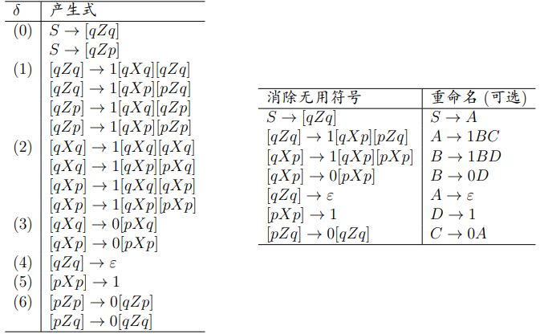
确定性下推自动机
定义：如果PDA $P=(Q,\Sigma,\Gamma,\delta,q_0,Z_0,F)$满足
- $\forall a \in \Sigma \cup \lbrace \epsilon \rbrace, \delta(q,a,X)$至多有一个动作
- $\forall a \in \Sigma$，如果$\delta(q,a,X) \not= \emptyset$，那么$\delta(q,\epsilon,X)=\emptyset$
则称$P$为确定型下推自动机(DPDA)
DPDA $P$以终态的方式接受的语言$\boldsymbol{L}(P)$称为DCFL
- DPDA中$\forall (q,a,Z) \in Q \times \Sigma \times \Gamma$满足$\vert \delta(q,a,Z) \vert + \vert \delta(q,\epsilon,Z) \vert \leq 1$
- DPDA与PDA不等价
例8：任何DPDA都无法接受$L_{wwr}$，但是可以接受
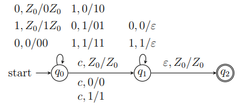
DCFL的重要应用
- 非固有歧义语言的真子集
- 程序设计语言的语法分析器
- $LR(k)$文法，Yacc的基础，解析时间复杂度为$O(n)$
正则语言与DPDA
定理29：如果$L$是正则语言，那么存在DPDA $P$以终态方式接受$L$，即$L=\boldsymbol{L}(P)$
证明：显然，DPDA $P$可以不用栈而莫模拟任何DFA
- $L_{wcwr}$显然CFL，所以DCFL语言类真包含正则语言
- DPDA无法识别$L_{wwr}$，所以DCFL语言真包含于CFL
定义：如果语言$L$中不存在字符串$x$和$y$，使$x$是$y$的前缀，称语言$L$满足前缀性质
定理30：DPDA $P$且$L=\boldsymbol{N}(P)$，当且仅当$L$由前缀性质，且存在DPDA $P^{\prime}$使$L=\boldsymbol{L}(P^{\prime})$
- DPDA $P$的$\boldsymbol{N}(P)$更有限，即使正则语言$\boldsymbol{0}^{\ast}$也无法接受
- 但却可以被某个DPDA以终态方式接受
DPDA与歧义文法
定理31：DPDA $P$，语言$L=\boldsymbol{L}(P)$，那么$L$有无歧义的CFG
定理32：DPDA $P$，语言$L=\boldsymbol{N}(P)$，那么$L$有无歧义的CFG
- 因此DPDA再语法分析中占重要地位
- 但是并非所有固有歧义CFL都会被DPDA识别如$L_{wwr}$有无歧义文法$S \to 0S1 \vert 1S1 \vert \epsilon$
语言之间的关系：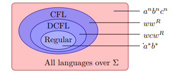